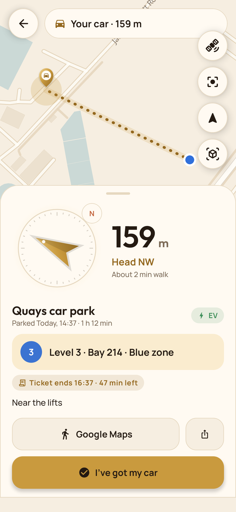
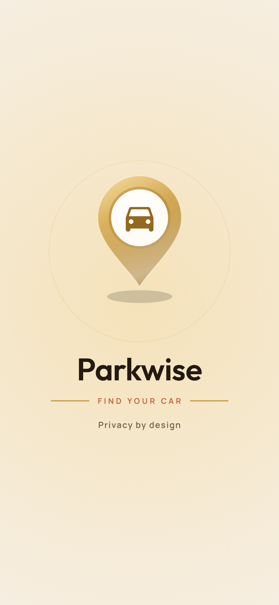
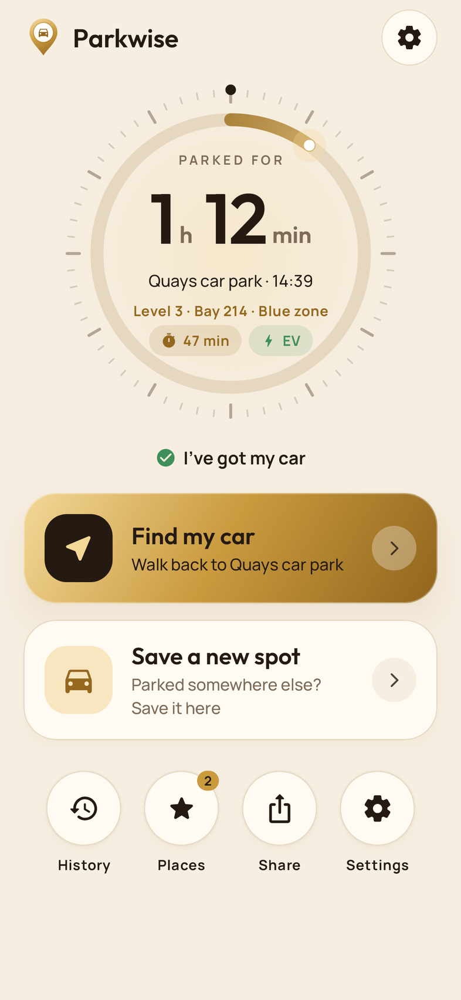
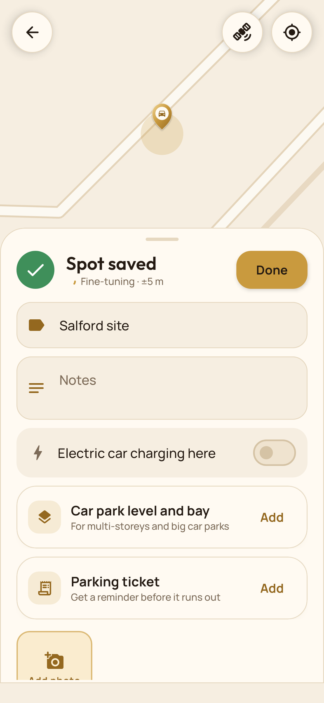
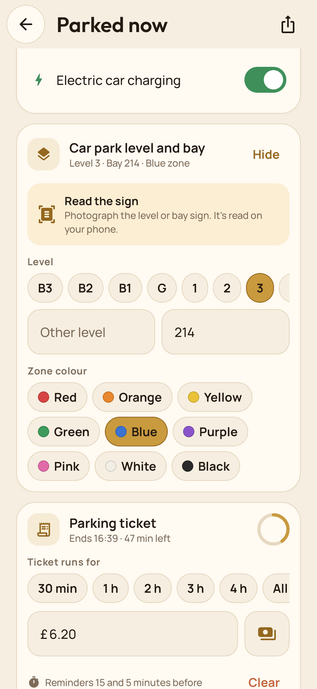
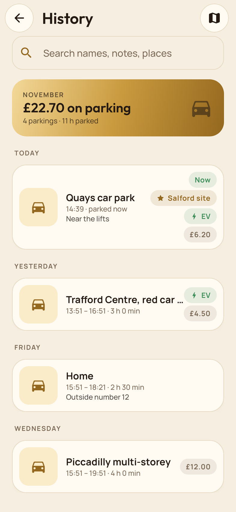
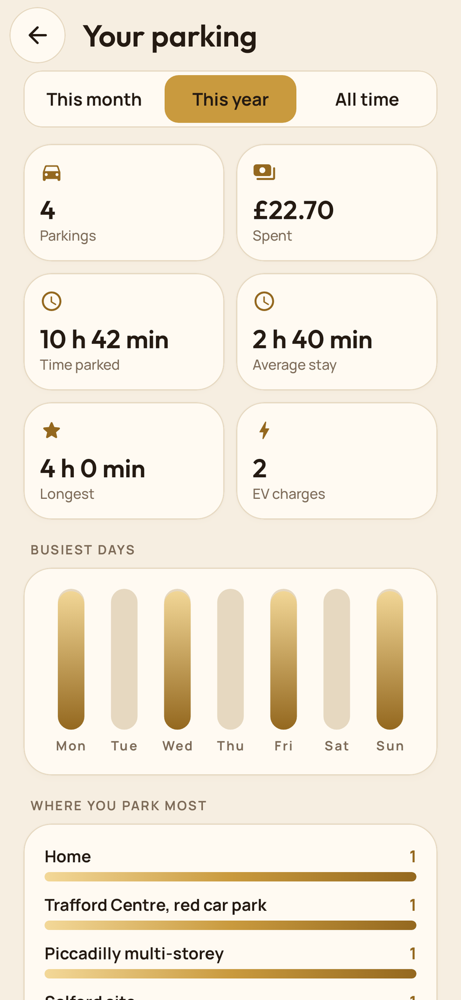
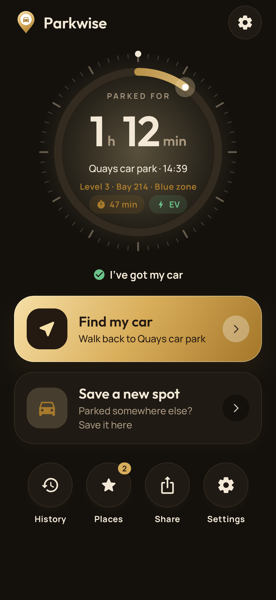
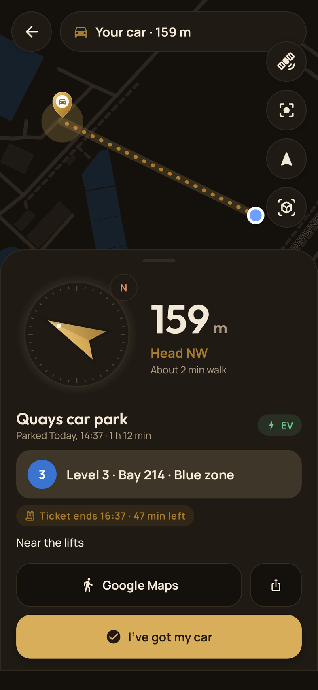

Never lose the car again.
Parkwise saves where you parked with one tap, then walks you back with a live arrow, the distance, and a gentle tap in your hand when the phone points at the car.
It remembers the level, bay and zone in multi-storeys, counts down your parking ticket, and keeps all of it on your phone.
Download for AndroidHow to install
- Version 1.0.0
- Android 8 or later
- 42.0 MB
Free, with nothing to unlock. No adverts, no account with the developer, no tracking. Compare or read the release notes.
Chrome may say the file might be harmful. It shows this for app files that do not come from Google Play. Choose Download anyway.

- No advertsNone in the app and none on this site.
- Stays on your phoneWhere you park is never sent to anyone.
- Works with no signalSaving and the arrow back work underground.
- No accountNothing to sign up for.
A look inside
These are the real screens, drawn from the app's own code with a made-up parking, over the real map. Swipe or scroll sideways to see them all.








How it works
Three moments: when you park, while you are away, and when you come back.
Park and tap Save
Parkwise finds your exact spot and drops a gold pin on it. In a multi-storey, tap the level and bay, or photograph the sign.
Get on with your day
The parked notification and widgets show how long you have been, and the ticket countdown reminds you before it runs out.
Walk straight back
Open Find my car. The arrow points the way and the distance counts down until the phone buzzes: you are at your car.
Everything is in, and all of it is free
Nothing below is held back for a paid tier, because there is no paid tier. The extras that need more access are off until you switch them on.
Saving the spot
- One tap, accurate to 30 ft
- Parkwise saves as soon as your phone knows where it is to within 30 feet, then keeps fine-tuning for half a minute. Underground, it saves its best reading after ten seconds and says it is rough.
- Put the pin exactly right
- Move the map under the pin to mark the very bay, with satellite view if you want to see the lines.
- Auto-save, if you want it
- Off until you switch it on: save when the car's Bluetooth disconnects, or when the phone senses you have stopped driving and started walking.
Walking back
- A live arrow and the distance
- The map opens on you and the car, a gold line draws the way, and the arrow turns as you turn. It buzzes when you arrive.
- Feel the way
- Optional pulses: the phone taps your hand when it points at the car, faster as you get closer.
- Camera view
- Hold the phone up and a gold pin floats over the camera picture where the car is. Nothing is recorded.
- Google Maps, Waze and offline maps
- Hand the walk to Google Maps or Waze in one tap, and save the map for the places you go so it shows with no signal.
Car parks and tickets
- Level, bay and zone
- Tap the level, type the bay, pick the zone colour, or photograph the sign and let Parkwise read it, on the phone.
- Never overstay
- Set the ticket in two taps. A ring counts down, and reminders arrive 15 and 5 minutes before it runs out.
- What parking costs you
- Note the price and see the month's total, the year, your busiest days and where you park most.
Everyday
- Always at hand
- A parked notification with Find and I've got my car, three home screen widgets, a Quick Settings tile and icon shortcuts.
- History, places and sharing
- Every parking kept by day. Home, work and site are named for you. Share a plain message with a Google Maps link, or a QR code.
- Backup and app lock
- A backup file locked with your password, kept on your phone or in Google Drive, and an optional fingerprint lock.
- Your look
- Light or dark, colours from your wallpaper, larger text, high contrast, and several vehicles if you need them.
Where you park is your business
Kept on your phone
Your parkings, photos, places and stats stay in the app. There is no account and no Parkwise server.
No ads, no tracking
There is no advertising, analytics or tracking, in the app or on this site.
Sharing is your choice
Share a spot and Parkwise writes a plain message with a map link for the app you pick. Nothing goes through anyone in between.
Only map pictures online
The map is drawn from OpenFreeMap's OpenStreetMap tiles, with no key and no account. Those servers see which squares of map are fetched, never who you are or where you parked.
Installing and updating
Parkwise is not on Google Play, so your phone asks a couple of extra questions the first time.
Download the app file
Tap Download on your phone. The file is called Parkwise.apk and is about 42.0 MB. If Chrome says the file might be harmful, choose Download anyway.
Allow the install
Open the file. The first time, Android asks you to allow your browser to install apps. Allow it, go back and tap Install. If Google Play Protect steps in, choose More details, then Install anyway.
Updating later
In Settings, About, Check for updates opens the release notes page. Install the new file over the old one and your parkings, places and settings are kept.
Version 1.0.0, released 23 November 2026. See the release notes, or check your download.
Questions
Is Parkwise really free?
Yes. There is no paid version, no subscription and no adverts, and nothing is locked. Every feature is there from the start.
Is it on Google Play?
No. Parkwise is a personal project and is downloaded from this site as an Android app file. It needs Android 8 or later, which covers almost every phone made since 2017.
Does it need the internet?
Only for the map pictures. Saving your spot, the arrow, the distance, the ticket reminders and everything else work with no signal. Save the map in Settings, Offline maps, and it shows underground too.
How accurate is it?
Parkwise waits until the phone is sure of its position to within 30 feet before it saves, then keeps improving it. Deep inside a multi-storey GPS cannot reach, so add the level and bay, or move the pin by hand.
Does it share where I park?
No. Your parkings, photos and places are kept only on your phone. When you choose to share a spot, Parkwise hands a plain message to the app you pick. There is no Parkwise server.
Why does it ask for location all the time?
Only if you switch on auto-save. To save the spot when the car's Bluetooth disconnects or you stop driving, it needs to read the location at that moment while the app is closed. Without auto-save it only uses location while it is open.
How does it read the car park sign?
Photograph the level or bay sign and Parkwise reads the writing using the open-source Tesseract engine, on your phone. The photo is never uploaded.
Will the ticket reminders definitely arrive?
They are made on your phone and arrive on time on almost every phone. Some phones hold back alarms to save battery: allow notifications and on-time reminders in Settings, and check the signs too.
Does it run down the battery?
No. Location is only used while Parkwise is open, or at the moment you park if auto-save is on. Nothing runs in the background otherwise.
Does it work on an iPhone?
No. Parkwise is for Android phones and tablets only.
Who made it?
Parkwise is made by Jonathan Jackson, an independent developer in the United Kingdom.
Park it. Find it.
Free, with no adverts and nothing to unlock. Made by the developer of several other free Android apps: see them all.